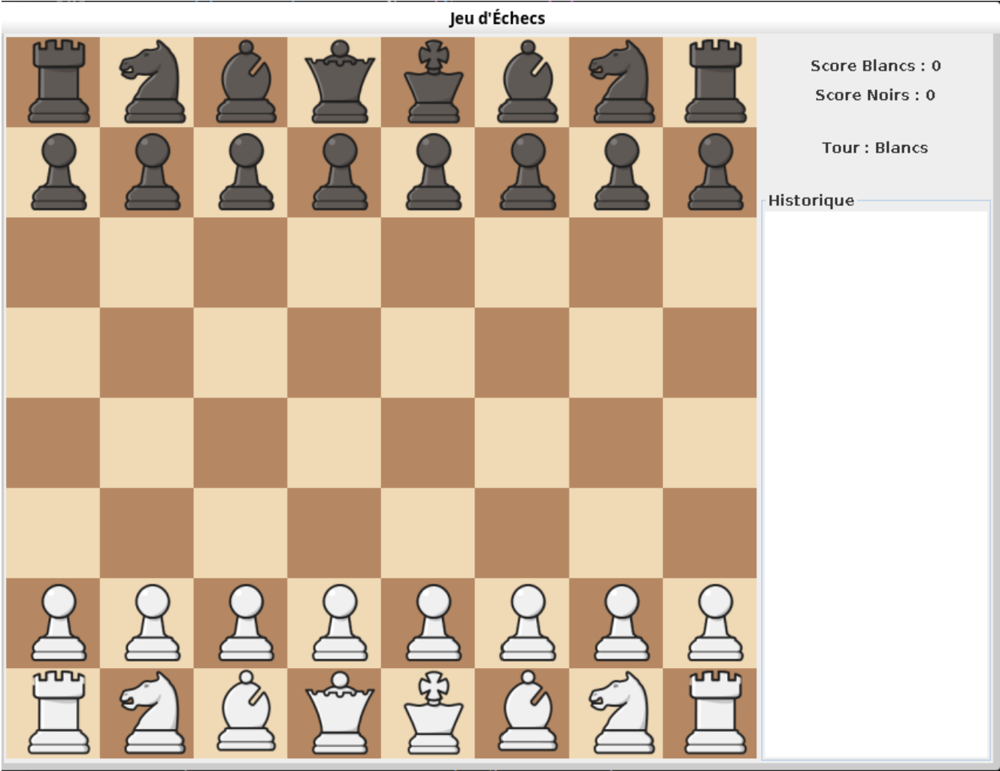
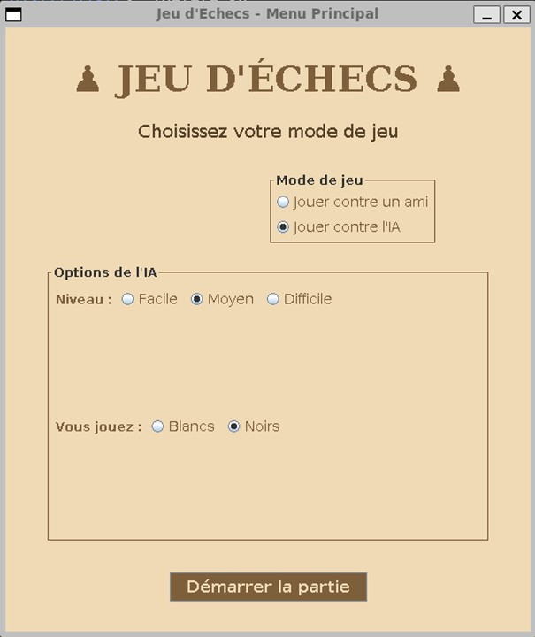
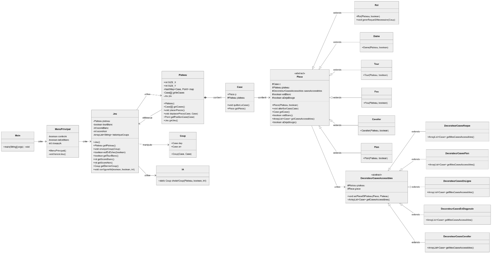

Introduction
Ce projet implémente un jeu d'échecs en Java, permettant de jouer selon les règles classiques avec une interface graphique intuitive. Les joueurs peuvent jouer contre un ami ou affronter l'intelligence artificielle (IA) avec trois niveaux de difficulté : facile, moyen, et difficile.

Interface de jeu principale
Lancer le projet
- Vérification de Java :
java -versionpermet de vérifier que Java est installé sur la machine. - Compilation :
javac Main.javacompile le fichier source. - Exécution :
java Mainexécute le programme compilé.
Fonctionnalités
Règles des Échecs
L'implémentation couvre rigoureusement les règles classiques :
- Déplacements spécifiques à chaque type de pièce
- Captures de pièces
- Échec et échec et mat
- Match nul par pat ou après répétition de trois situations égales
- Roque (petit et grand)
- Prise en passant
- Promotion des pions
Intelligence Artificielle
L'IA comporte trois niveaux de difficulté distincts :
- Facile : L'IA joue des coups aléatoires parmi les coups légaux.
- Moyen : L'IA privilégie les captures avantageuses.
- Difficile : L'IA évalue les positions globales et cherche des coups stratégiques.

Menu principal de configuration de la partie
Architecture Logicielle
Le projet utilise plusieurs patterns de conception (Design Patterns) pour garantir un code propre, modulaire et maintenable :
- Modèle MVC : Séparation stricte des responsabilités entre la logique métier du jeu (Modèle), l'affichage graphique via Java Swing (Vue), et la gestion des interactions utilisateur (Contrôleur).
- Décorateur : Utilisé pour la gestion modulaire des règles de déplacement des pièces (roque, prise en passant, mouvements en diagonale ou en ligne).
- Observer : Maintien de la synchronisation en temps réel entre la vue et l'état interne du jeu.

Diagramme des classes de l'application
Difficultés Rencontrées
- Implémentation des règles spéciales : Le roque et la prise en passant ont posé des défis algorithmiques, qui ont été résolus élégamment grâce à l'utilisation de décorateurs spécifiques et de méthodes spécialisées.
- Détection de l'échec et mat : La vérification complète des situations d'échec a nécessité de simuler virtuellement tous les coups possibles pour s'assurer de leur légalité sans impacter la partie en cours.